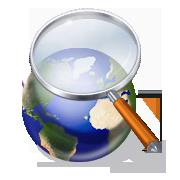

|  Google:
Google was founded and was now available to the public, though it was not the first search engine they had a different goal, their mission statement was "to organize the world's information and make it universally accessible and useful" which we can see that they have succeeded and it can be used to reaserch things faster then ever. |